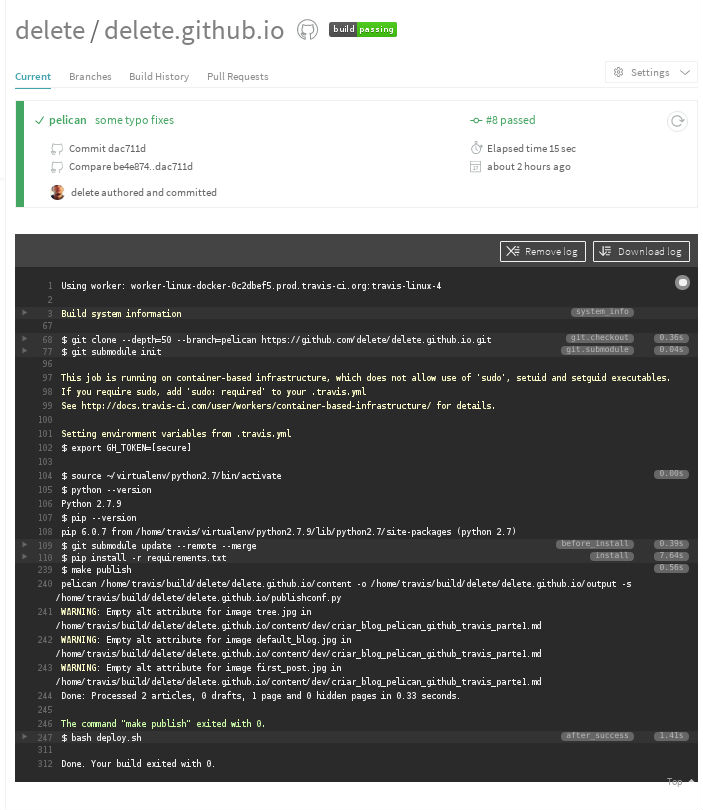

Dando sequência ao primeiro post, agora iremos integrar nosso blog ao Travis.
O que é Travis?
O Travis é um automatizador de build e deploy de aplicações.
Ele basicamente vai testar(unit tests), gerar o "build"(no nosso blog será os arquivos HTML) e fazer o deploy da aplicação para algum servidor(pra gente será o Github Pages).
Ativando Travis
Acesse o site do Travis, faça login com sua conta do Github e siga as instruções para ativar seu repositório do blog.
Configurações do Travis
Para ativar o Travis também precisamos de um arquivo de configuração, chamado .travis.yml.
Vamos cria-lo.
$ touch .travis.yml
Nesse arquivo teremos os seguintes dados:
branches:
only:
- pelican
language: python
python:
- 2.7
install:
- pip install -r requirements.txt
script:
- make publish
notifications:
email:
on_success: never
on_failure: never
env:
global:
before_install:
- git submodule update --init --recursive
after_success: bash deploy.sh
Esse arquivo basicamente diz para ao Travis o que ele precisa executar em determinado momento.
Instalação do Travis
Para instalar o Travis, será preciso instalar o Ruby antes, pois iremos utilizar o gem, que é o gerenciador de pacotes dele.
$ sudo apt-get install ruby-full
$ sudo gem install travis
Autenticando com Github
Para que o Travis possa dar push para o repositório master no Github, é preciso que ele se autentique antes. Para isso, iremos utilizar o token de acesso.
Para gerar o token, é preciso entrar no settings do seu Github e ir na opção de "Personal access tokens", ou clique aqui.
Depois de instalado o Travis e com o token em mãos, é hora de vincular o token ao Travis, para isso rode o comando abaixo dentro do seu repositório do blog.
$ travis encrypt GH_TOKEN=SEU_TOKEN_AQUI --add env.global
OBS: Se o comando acima funcionar para você, ignore esse aviso.
Eu tive problema na hora de executar o Travis, ele só funciona se eu o rodar direto de seu local de instalação:
~/.gem/ruby/2.2.0/gems/travis-1.8.0/bin/travis
Script para deploy
Para que toda a beleza aconteça, precisamos dar ao Travis um script que faça o commit e o push dos arquivos estáticos para nosso repositório master de uma forma automatizada.
Crie o arquivo deploy.sh.
$ touch deploy.sh
Agora adicione as seguintes linhas:
#!/usr/bin/env bash
BRANCH=master
TARGET_REPO=githubUsername/githubUsername.github.io
PELICAN_OUTPUT_FOLDER=output
echo -e "Testing travis-encrypt"
echo -e "$VARNAME"
if [ "$TRAVIS_PULL_REQUEST" == "false" ]; then
echo -e "Starting to deploy to Github Pages\n"
if [ "$TRAVIS" == "true" ]; then
git config --global user.email "SEU_EMAIL_DO_GITHUB"
git config --global user.name "SEU_NOME"
fi
# using token clone gh-pages branch
git clone --quiet --branch=$BRANCH https://${GH_TOKEN}@github.com/$TARGET_REPO built_website > /dev/null
# go into directory and copy data we're interested in to that directory
cd built_website
# limpa branch master para nao ficar arquivos lixo, como arquivos excluidos e/ou renomeados
find . -maxdepth 1 ! -name '.git' ! -name '.*' | xargs rm -rf
rsync -rv --exclude=.git ../$PELICAN_OUTPUT_FOLDER/* .
# add, commit and push files
git add --all -f .
git commit -m "Travis build $TRAVIS_BUILD_NUMBER pushed to Github Pages"
git push -fq origin $BRANCH > /dev/null
echo -e "Deploy completed\n"
fi
Não entrarei em detalhes do que cada linha do script faz, apenas mude as variáveis para seus dados.
Deploy
Sempre que quiser criar um novo post, crie um arquivo dentro do diretório content, e envie para o branch pelican no Github.
$ git add .
$ git commit -m "Novo post"
$ git push origin pelican
Agora sim! Se tudo ocorreu bem até aqui, no site do Travis, ele irá mostrar se deu tudo certo ou se deu erro, e qual erro deu.
Exemplo de mensagem de sucesso do Travis:

Conclusão
À primeira vista pode parecer um pouco complicado, mas depois de configurado é bem fácil fazer novas publicações.
Dúvidas? Perguntas? Sugestões? Entre em contato. Até!
Referências
-
Blog PythonClub - https://github.com/pythonclub/pythonclub.github.io
-
Travis - https://travis-ci.org/
-
reStructuredText - http://docutils.sourceforge.net/rst.html
-
Github Pages - https://pages.github.com/
-
Pelican - http://blog.getpelican.com/
-
Pelican Themes - https://github.com/getpelican/pelican-themes
-
http://zonca.github.io/2013/09/automatically-build-pelican-and-publish-to-github-pages.html
-
http://blog.mathieu-leplatre.info/publish-your-pelican-blog-on-github-pages-via-travis-ci.html
-
https://fedoramagazine.org/make-github-pages-blog-with-pelican/